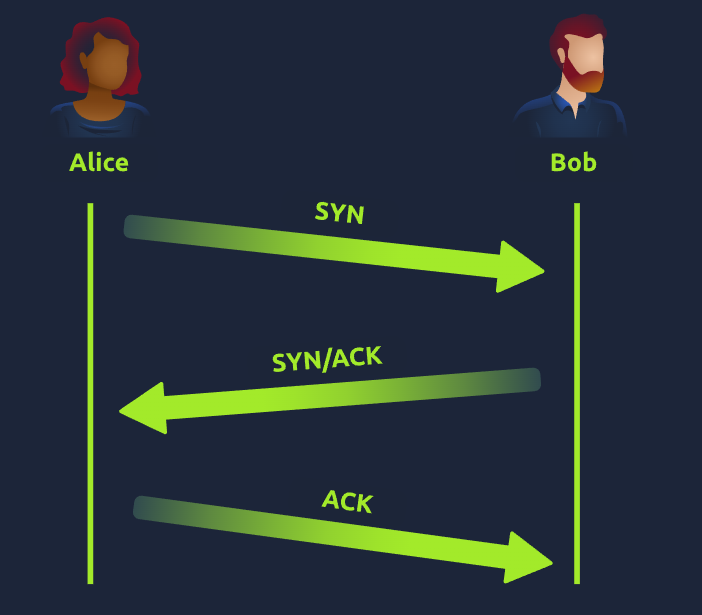
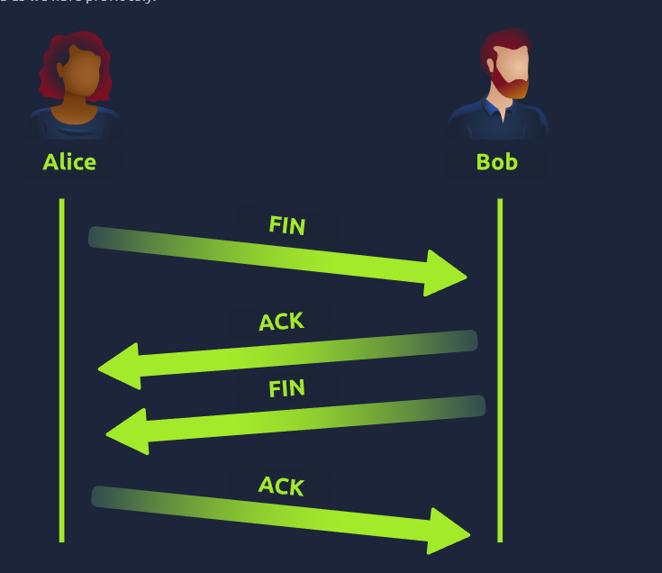
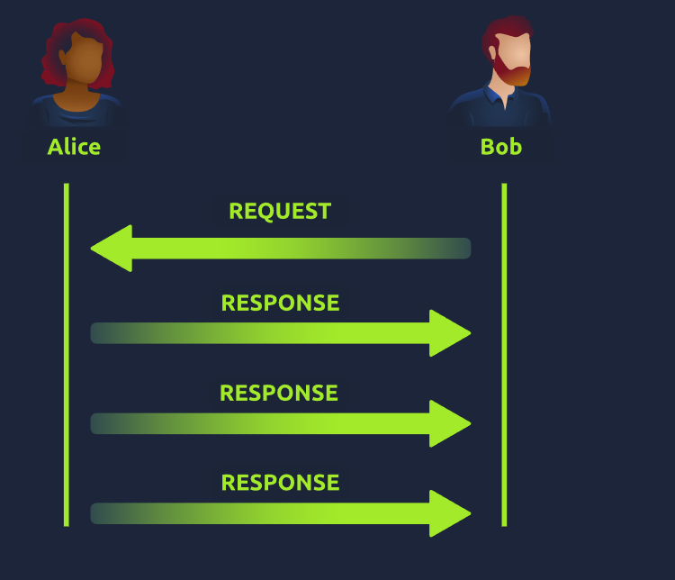

Understand how data is divided into smaller pieces and transmitted — packets, frames, TCP/IP, the three-way handshake, UDP, and ports.
Task 1 — What are Packets and Frames?
Packets and frames are small pieces of data that, when combined, form a larger piece of information or message. They are two different things within the OSI model.
A packet is a piece of data at Layer 3 (Network) — it contains information such as an IP header and a payload. When we talk about anything involving IP addresses, we are talking about packets.
A frame is used at Layer 2 (Data Link) — it encapsulates the packet and adds additional information such as the MAC address. Think of it like mail: the frame is the envelope (used to move the contents to another place) and the packet is the letter inside. Once the recipient opens the envelope (frame), they know how to forward the letter (packet). This process is called encapsulation.
Packets are an efficient way to communicate data across a network — exchanging data in small pieces significantly reduces the chance of bottlenecks compared to sending large messages whole. For example, when loading an image from a website, the image is not sent as a single file but as many small pieces that are reconstructed on arrival.
Notable IP packet headers: Time to Live (TTL) — sets an expiry timer so the packet doesn't clog the network if it never reaches its destination; Checksum — provides integrity checking, any change to the data produces a different value flagging corruption; Source address — IP of the sending device; Destination address — IP of the receiving device.
Answer the questions below
What is the name for a piece of data when it does have IP addressing information?
Packet
What is the name for a piece of data when it does not have IP addressing information?
Frame
Task 2 — TCP/IP (The Three-Way Handshake)
TCP/IP is a protocol similar in concept to the OSI model. It consists of four layers: Application, Transport, Internet, and Network Interface — an arguably simplified version of OSI. Information is added at each layer as the packet traverses it (encapsulation), and stripped away in reverse on receipt (decapsulation).
A defining feature of TCP is that it is connection-based — a connection must be established between client and server before any data is sent. This guarantees that data sent will be received on the other end. The process of establishing this connection is called the three-way handshake.
Key TCP packet headers: Source Port (randomly chosen by sender, 0–65535), Destination Port (the port the service runs on — e.g. port 80 for a web server), Source IP, Destination IP, Sequence Number (first piece of data given a random number), Acknowledgement Number (sequence number + 1 for the next piece), Checksum (mathematical integrity check), Data (the actual content), Flag (determines how the packet should be handled during the handshake).
The three-way handshake: SYN — client sends initial packet to initiate connection and synchronise sequence numbers. SYN/ACK — server acknowledges and sends back its own initial sequence number. ACK — client acknowledges the server's ISN. Connection is now established. DATA — data is transmitted. FIN — cleanly closes the connection once all data has been received. RST — abruptly ends all communication, used as a last resort when something goes wrong.
Any sent data is given a random sequence number and reconstructed using that number (incrementing by 1). Both devices agree on the sequence order during the handshake before any data is transferred.
TCP disadvantages: requires a reliable connection (if one small chunk is lost, the entire chunk must be resent), a slow connection can bottleneck another device while it waits, and TCP is significantly slower than UDP due to the additional processing involved.

TCP three-way handshake between two devices — SYN, SYN/ACK, ACK

TCP closing a connection cleanly using FIN packets
Answer the questions below
What is the header in a TCP packet that ensures the integrity of data?
Checksum
Provide the order of a normal three-way handshake
SYN, SYN/ACK, ACK
Task 3 — Practical: Handshake
A simulated conversation between two devices following the TCP handshake process. Had to select the correct message in the correct TCP sequence — SYN, SYN/ACK, ACK — to successfully establish the connection and receive the flag.
Answer the questions below
What is the value of the flag given at the end of the conversation?
THM{WIRESHARK_CAPTURE}
Task 4 — UDP/IP
UDP (User Datagram Protocol) is another protocol used to communicate data between devices. Unlike TCP, UDP is a stateless protocol — it does not require a constant connection between devices for data to be sent, and there is no three-way handshake or synchronisation.
UDP is used in situations where applications can tolerate some data loss (video streaming, voice chat) or where an unstable connection is acceptable. There are no safeguards like TCP's data integrity checks.
UDP advantages: much faster than TCP, leaves the application layer to control packet pacing, does not reserve a continuous connection on the device. Disadvantages: doesn't care if data is received or not, unstable connections result in a poor user experience.
UDP packets are simpler than TCP — they contain fewer headers. Both protocols share some common headers: TTL, Source address, Destination address, Source port (random, 0–65535), Destination port (the service port, e.g. 80 for a web server), and Data.

UDP packet structure — simpler than TCP with fewer headers
Answer the questions below
What does the term "UDP" stand for?
User Datagram Protocol
What type of connection is "UDP"?
Stateless
What protocol would you use to transfer a file?
TCP
What protocol would you use to have a video call?
UDP
Task 5 — Ports 101 (Practical)
Ports are the essential points through which data is exchanged on a network — like a harbour where ships dock at specific berths. Networking devices use ports to enforce strict rules about communication: only compatible connections can dock at a given port.
Ports are numerical values ranging from 0–65535. Without standardisation there would be chaos — so commonly used applications and protocols are assigned standard port numbers. Any port within 0–1024 is known as a common port.
Common port assignments: FTP (21) — file sharing via client-server model; SSH (22) — secure text-based login to systems; HTTP (80) — powers the World Wide Web; HTTPS (443) — encrypted version of HTTP; SMB (445) — file and device (e.g. printer) sharing; RDP (3389) — remote desktop access via virtual interface.
Answer the questions below
How many ports are there in total?
65535
What port would you use to access a web server running HTTP?
80
What flag do you get when you connect to the practical?